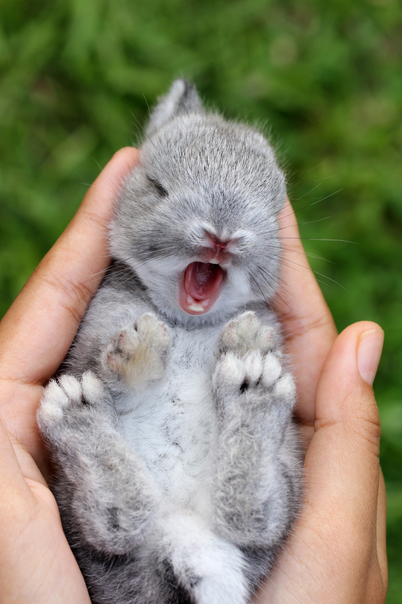
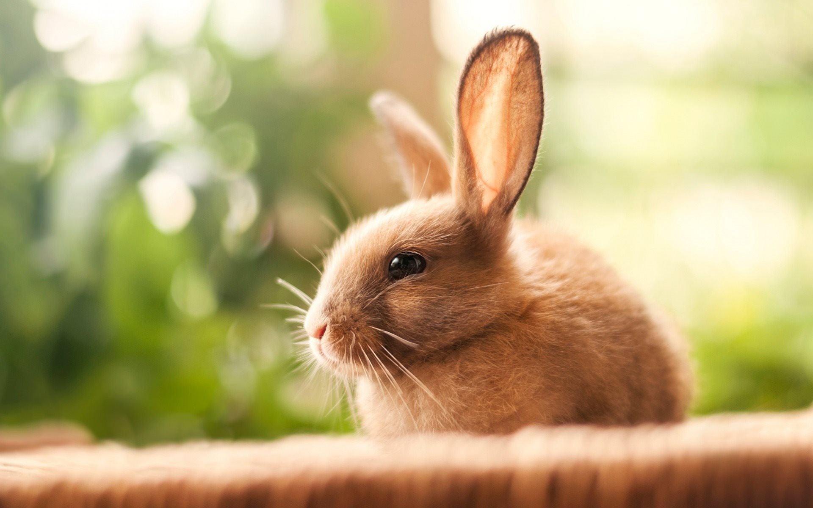

ИНтересные фактики о кроликах:
- Поодиночке живут только американские кролики, все остальные объединяются в группы.
- Если кролик понимает, что ему грозит опасность, то он предпочтет убежать, а не ввязываться в драку, но если его загнать в угол, то кролик будет защищаться. У этого зверька мощные задние лапы, которыми он может даже убить врага.
- Крольчата появляются на свет без меха и с закрытыми глазами
- Если вы завели кролика, то наверняка знаете, что его лучше не брать на руки. Кролики до ужаса боятся, когда их отрывают от земли, поскольку в дикой природе так обычно делают хищники.
- В дикой природе вес кролика — около четырех килограммов, домашние зверьки могут весить даже 11 килограммов.
- В дикой природе кролики могут бегать со скоростью до 55 километров в час.
- Кроликов разводил король Пруссии Фридрих. Его кроличьей "стае" выделили целый островок, который находился на реке.
- Известным любителем кроликов был Наполеон III. Он занимался разведением этих пушистых зверьков. 
- В Австралии кролики внесены в черный список. До XVIII века их не было на континенте, пока их не завезли добрые люди. Кролики стали размножаться с космической скоростью, что стало угрожать нормальному функционированию экосистемы. Кроликов сначала стали отстреливать, а затем значительно сократили их численность, распространив среди них особый вирус. А в штате Квинсленд даже на законодательном уровне запретили держать дома кроликов. И если кто-то решит все же пойти наперекор государству, то ему придется заплатить штраф в 30 тысяч австралийских долларов. 
- Есть за что благодарить кроликов и ацтекам. Обнаружив как-то опьяневших кроликов, которые поедали забродившие кактусы, ацтеки смогли понять, как делать алкоголь. Причем открытие это сделала некая Майяуаль, она заметила первой неадекватного кролика. За это открытие она вошла в пантеон богов. Существует легенда, что потом эта богиня родила 400 кроликов, покровителей опьянения. Жители Мексики и по сей день соблюдают традицию: перед распитием алкогольных напитков надо выплеснуть чуть-чуть огненной жидкости на пол, чтобы умилостивить кроликов.